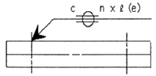
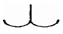
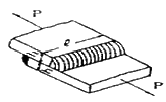

용접산업기사 (2015-03-08 기출문제)
1과목: 용접야금 및 용접설비제도
1. 질기고 강하며 충격파괴를 일으키기 어려운 성질은?
- 연성
- 취성
- 굽힘성
- 인성
(정답률: 66%)

2. 금속강화방법으로 금속을 구부리거나 두드려서 변형을 가하여 금속을 단단하게 하는 방법은?
- 가공경화
- 시효경화
- 고용경화
- 이상경화
(정답률: 87%)
3. 두 종류의 금속이 간단한 원자의 정수비로 결합하여 고용체를 만드는 물질은?
- 층간화합물
- 금속간화합물
- 합금화합물
- 치환화합물
(정답률: 90%)
4. 일반적으로 금속의 크리프곡선은 어떠한 관계를 나타낸 것인가??
- 응력과 시간의 관계
- 변위와 연신율의 관계
- 변형량과 시간의 관계
- 응력과 변형율의 관계
(정답률: 48%)
5. 고장력강의 용접부 중에서 경도 값이 가장 높게 나타나는 부분은?
- 원질부
- 본드부
- 모재부
- 용착금속부
(정답률: 53%)
6. 용접할 재료의 예열에 관한 설명으로 옳은 것은?
- 예열은 수축 정도를 늘려준다.
- 용접 후 일정시간동안 예열을 유지시켜도 효과는 떨어진다.
- 예열은 냉각 속도를 느리게 하여 수소의 확산을 촉진 시킨다.
- 예열은 용접 금속과 열영향 모재의 냉각속도를 높여 용접균열에 저항성이 떨어진다.
(정답률: 69%)
7. 용접용 고장력강의 인성(toughness)을 향상시키기 위해 첨가하는 원소가 아닌 것은?
- P
- Al
- Ti
- Mn
(정답률: 59%)
8. 스테인리스강의 종류가 아닌 것은?
- 마텐자이트계 스테인리스강
- 페라이트계 스테인리스강
- 오스테나이트계 스테인리스강
- 트루스타이트계 스테인리스강
(정답률: 81%)
9. 탄소량이 약 0.80%인 공석강의 조직으로 옳은 것은?
- 페라이트
- 펄라이트
- 시멘타이트
- 레데뷰라이트
(정답률: 50%)
10. Fe-C 평형 상태도에서 감마철(γ - Fe)의 결정 구조는?
- 면심입방격자
- 체심입방격자
- 조밀입방격자
- 사방입방격자
(정답률: 68%)
11. 용접 기호를 설명한 것으로 틀린 것은?

- 시임용접으로 C는 슬롯부의 폭을 나타낸다.
- 시임용접으로 (e)는 용접비드의 사이거리를 나타낸다.
- 시임용접으로 화살표 반대방향의 용접을 나타낸다.
- 시임용접으로 n은 용접부의 개수를 나타낸다.
(정답률: 80%)
12. 도면에서 치수 숫자의 방향과 위치에 대한 설명 중 틀린 것은?
- 치수 숫자의 기입은 치수선 중앙 상단에 표시한다.
- 치수 보조선이 짧아 치수 기입이 어렵더라도 숫자 기입은 중앙에 위치하여야 한다.
- 수평 치수선에 대하여는 치수가 위쪽으로 향하도록 한다.
- 수직 치수선에서는 치수를 왼쪽에 기입하도록 한다.
(정답률: 71%)
13. 건축, 교량, 선박, 철도, 차량 등의 구조물에 쓰이는 일반구조용 압연강재 2종의 재료 기호는?
- SHP 2
- SCP 2
- SM 20C
- SS 400
(정답률: 77%)
14. 가상선의 용도에 대한 설명으로 틀린 것은?
- 인접부분을 참고로 표시할 때
- 공구, 지그 등의 위치를 참고로 나타낼 때
- 대상물이 보이지 않는 부분을 나타낼 때
- 가공 전 또는 가공 후의 모양을 나타낼 때
(정답률: 51%)
15. 전개도를 그리는 방법에 속하지 않는 것은?
- 평행선 전개법
- 나선형 전개법
- 방사선 전개법
- 삼각형 전개법
(정답률: 75%)
16. 용접부의 표면 형상 중 끝단부를 매끄럽게 가공하는 보조 기호는?

(정답률: 92%)
17. 도면의 종류와 내용이 다른 것은?
- 조립도 : 물품의 전체적인 조립상태를 나타내는 도면
- 부품도 : 물품을 구성하는 각 부품을 개별적으로 상세하게 그리는 도면
- 스케치도 : 기계나 장치 등의 실체를 보고 자를 대고 그리는 도면
- 전개도 : 구조물, 물품 등의 표면을 평면으로 나타내는 도면
(정답률: 72%)
18. 투상법 중 등각투상도법에 대한 설명을 옳은 것은?
- 한 평면 위에 물체의 실제모양을 정확히 표현하는 방법을 말한다.
- 정면, 측면, 평면을 하나의 투상면 위에서 동시에 볼 수 있도록 그려진 투상도이다.
- 물체의 주요 면을 투상면에 평행하게 놓고, 투상면에 대해 수직보다 다소 옆면에서 보고 나타낸 투상도이다.
- 도면에 물체의 앞면, 뒷면을 동시에 표시하는 방법이다.
(정답률: 68%)
19. 도면에서 표제란의 척도 표시란에 NS의 의미는?
- 배척을 나타낸다.
- 척도가 생략됨을 나타낸다.
- 비례척이 아님을 나타낸다.
- 현척이 아님을 나타낸다.
(정답률: 80%)
20. 도면의 크기에 대한 설명으로 틀린 것은?
- 제도 용지의 세로와 가로 비는 1 : √2 이다.
- A0의 넓이는 약 1[m2]이다.
- 큰 도면을 접을 때는 A3의 크기로 접는다.
- A4의 크기는 210 × 297[mm]이다.
(정답률: 82%)
2과목: 용접구조설계
21. 용접봉 종류 중 피복제에 석회석이나 형석을 주성분으로 하고 용접금속 중의 수소 함유량이 다른 용접봉에 비해서 1/10 정도로 현저하게 낮은 용접봉은?
- E4301
- E4303
- E4311
- E4316
(정답률: 86%)
22. 용접부에 대한 침투검사법의 종류에 해당하는 것은?
- 자기침투검사, 와류침투검사
- 초음파침투검사, 펄스침투검사
- 염색침투검사, 형광침투검사
- 수직침투검사, 사각침투검사
(정답률: 68%)
23. 연강 및 고장력강용 플럭스 코어 아크용접 와이어의 종류 중 하나인 YFW - C502X에서 2가 뜻하는 것은?(오류 신고가 접수된 문제입니다. 반드시 정답과 해설을 확인하시기 바랍니다.)
- 플럭스 타입
- 실드가스
- 용착금속의 최소 인장강도 수준
- 용착금속의 충격시험 온도와 흡수에너지
(정답률: 44%)
24. 용접입열이 일정한 경우 용접부의 냉각속도는 열전도율 및 열의 확산하는 방향에 따라 달라질 때, 냉각속도가 가장 빠른 것은?
- 두꺼운 연강판의 맞대기 이음
- 두꺼운 구리판의 T형 이음
- 얇은 연강판의 모서리 이음
- 얇은 구리판의 맞대기 이음
(정답률: 72%)
25. 120A의 용접전류로 피복아크 용접을 하고자 한다. 적정한 차광 유리의 차광도 번호는?
- 6번
- 7번
- 8번
- 10번
(정답률: 80%)
26. 용접부의 시험과 검사 중 파괴 시험에 해당되는 것은?
- 방사선 투과시험
- 초음파 탐사시험
- 현미경 조직시험
- 음향 시험
(정답률: 77%)
27. 탄산가스(CO2)아크 용접부의 기공발생에 대한 방지 대책으로 틀린 것은?
- 가스 유량을 적정하게 한다.
- 노즐 높이를 적정하게 한다.
- 용접 부위의 기름, 녹, 수분 등을 제거한다.
- 용접전류를 높이고 운봉을 빠르게 한다.
(정답률: 85%)
28. 습기 찬 저수소계 용접봉은 사용 전 건조해야 하는데 건조 온도로 가장 적당한 것은?
- 70~100℃
- 100~150℃
- 150~200℃
- 300~350℃
(정답률: 72%)
29. 인장시험에서 구할 수 없는 것은?
- 인장응력
- 굽힘응력
- 변형률
- 단면 수축률
(정답률: 63%)
30. 설계단계에서의 일반적인 용접변형 방지법으로 틀린 것은?
- 용접 길이가 감소될 수 있는 설계를 한다.
- 용착금속을 증가시킬 수 있는 설계를 한다.
- 보강재 등 구속이 커지도록 구조 설계를 한다.
- 변형이 적어질 수 있는 이음 형상으로 배치한다.
(정답률: 71%)
31. 용접이음 강도 계산에서 안전율을 5로 하고 허용 응력을 100MPa이라 할 때 인장강도는 얼마인가?
- 300MPa
- 400MPa
- 500MPa
- 600MPa
(정답률: 89%)
32. 다음 그림은 겹치기 필릿용접 이음을 나타낸 것이다. 이음부에 발생하는 허용응력은 5MPa일 때 필요한 용접 길이(ℓ)는 얼마인가? (단, h=20mm, P=6kN이다.)

- 약 42mm
- 약 38mm
- 약 35mm
- 약 32mm
(정답률: 41%)
33. 용접부에 발생하는 잔류응력 완화법이 아닌 것은?
- 응력 제거 풀림법
- 피닝법
- 스퍼터링법
- 기계적 응력 완화법
(정답률: 82%)
34. 인장강도가 430MPa인 모재를 용접하여 만든 용접시험편의 인장강도가 350MPa일 때 이 용접부의 이음효율은 약 몇 %인가?
- 81
- 90
- 71
- 122
(정답률: 62%)
35. 용접 이음부의 형태를 설계할 때 고려할 사항이 아닌 것은?
- 용착 금속량이 적게 드는 이음 모양이 되도록 할 것
- 적당한 루트 간격과 홈 각도를 선택할 것
- 용입이 깊은 용접법을 선택하여 가능한 이음의 베벨가공은 생략하거나 줄일 것
- 후판용접에서는 양면 V형 홈보다 V형 홈 용접하여 용착 금속량을 많게 할 것
(정답률: 72%)
36. 전자빔 용접의 특징을 설명한 것으로 틀린 것은?
- 고진공 속에서 용접하므로 대기와 반응되기 쉬운 활성재료도 용이하게 용접이 된다.
- 전자렌즈에 의해 에너지를 집중시킬 수 있으므로 고용융 재료의 용접이 가능하다.
- 전기적으로 매우 정확히 제어되므로 얇은 판에서의 용접에만 용접이 가능하다.
- 에너지의 집중이 가능하기 때문에 용융 속도가 빠르고 고속 용접이 가능하다.
(정답률: 80%)
37. 접합하고자 하는 모재 한 쪽에 구멍을 뚫고 그 구멍으로부터 용접하여 다른 한쪽 모재와 접합하는 용접방법은?
- 플러그 용접
- 필릿 용접
- 초음파 용접
- 테르밋 용접
(정답률: 85%)
38. 필릿 용접과 맞대기 용접의 특성을 비교한 것으로 틀린 것은?
- 필릿 용접이 공작하기 쉽다.
- 필릿 용접은 결함이 생기지 않고 이면 따내기가 쉽다.
- 필릿 용접의 수축변형이 맞대기 용접보다 작다.
- 부식은 필릿 용접이 맞대기 용접보다 더 영향을 받는다.
(정답률: 57%)
39. 용접이음의 준비사항으로 틀린 것은?
- 용입이 허용하는 한 홈 각도를 작게 하는 것이 좋다.
- 가접은 이음의 끝 부분, 모서리 부분을 피한다.
- 구조물을 조립할 때에는 용접 지그를 사용한다.
- 용접부의 결함을 검사한다.
(정답률: 60%)
40. 용접 방법과 시공 방법을 개선하여 비용을 절감하는 방법으로 틀린 것은?
- 사용 가능한 용접 방법 중 용착 속도가 큰 것을 사용한다.
- 피복아크 용접할 경우 가능한 굵은 용접봉을 사용한다.
- 용접 변형을 최소화하는 용접 순서를 택한다.
- 모든 용접에 되도록 덧살을 많게 한다.
(정답률: 83%)
3과목: 용접일반 및 안전관리
41. 가스절단 시 절단면에 생기는 드래그라인(drag line)에 관한 설명을 틀린 것은?
- 절단속도가 일정할 때 산소 소비량이 적으면 드래그 길이가 길고 절단면이 좋지 않다.
- 가스 절단의 양부를 판정하는 기준이 된다.
- 절단속도가 일정할 대 산소 소비량을 증가시키면 드래그 길이는 길어진다.
- 드래그 길이는 주로 절단 속도, 산소 소비량에 따라 변화한다.
(정답률: 69%)
42. 용접의 특징으로 틀린 것은?
- 재료가 절약된다.
- 기밀, 수밀성이 우수하다.
- 변형, 수축이 없다.
- 기공(blow hole), 균열 등 결함이 있다.
(정답률: 89%)
43. 아크 용접 보호구가 아닌 것은?
- 핸드 실드
- 용접용 장갑
- 앞치마
- 치핑 해머
(정답률: 84%)
44. 서브머지드 아크 용접에서 소결형 용제의 특징이 아닌 것은?
- 고전류에서의 용접 작업성이 좋다.
- 합금원소의 첨가가 용이하다.
- 전류에 상관없이 동일한 용제로 용접이 가능하다.
- 용융형 용제에 비항 용제의 소모량이 많다.
(정답률: 56%)
45. 피복아크 용접 중 수동 용접기에 가장 적합한 용접기의 특성은?
- 정전압 특성
- 상승 특성
- 수하 특성
- 정 특성
(정답률: 54%)
46. 돌기용접(projection welding)의 특징으로 틀린 것은?
- 용접된 양쪽의 열용량이 크게 다를 경우라도 양호한 열평형이 얻어진다.
- 작은 용접점이라도 높은 신뢰도를 얻기 쉽다.
- 점용접에 비해 작업 속도가 매우 느리다.
- 점용접에 비해 전극의 소모가 적어 수명이 길다.
(정답률: 75%)
47. 가스용접 작업에 필요한 보호구에 대한 설명 중 틀린 것은?
- 앞치마와 팔덮개 등은 착용하면 작업하기에 힘이 들기 때문에 착용하지 않아도 된다.
- 보호장갑은 화상방지를 위하여 꼭 착용한다.
- 보호안경은 비산되는 불꽃에서 눈을 보호한다.
- 유해가스가 발생할 염려가 있을 때에는 방독면을 착용한다.
(정답률: 91%)
48. 피복아크용접봉에서 용융 금속 중에 침투한 산화물을 제거하는 탈산 정련작용제로 사용되는 것은?
- 붕사
- 석회석
- 형석
- 규소철
(정답률: 47%)
49. 피복 아크 용접기를 사용할 때의 주의 사항이 아닌 것은?(오류 신고가 접수된 문제입니다. 반드시 정답과 해설을 확인하시기 바랍니다.)
- 재료가 절약된다.
- 기밀, 수밀성이 우수하다.
- 변형, 수축이 없다.
- 기공(blow hole), 균열 등 결함이 있다.
(정답률: 80%)
50. 플래시 버트 용접의 과정 순서로 옳은 것은?
- 예열→업셋→플래시
- 업셋→예열→플래시
- 예열→플래시→업셋
- 플래시→예열→업셋
(정답률: 69%)
51. 카바이트(CaC2)의 취급법으로 틀린 것은?
- 카바이드는 인화성 물질과 같이 보관한다.
- 카바이드 개봉 후 뚜껑을 잘 닫아 습기가 침투되지 않도록 보관한다.
- 운반 시 타격, 충격, 마찰을 주지 말아야 한다.
- 카바이드 통을 개봉할 때 절단가위를 사용한다.
(정답률: 90%)
52. 피복아크용접에서 피복제의 작용으로 틀린 것은?
- 아크를 안정시킨다.
- 산화, 질화를 방지한다.
- 용융점이 높고 점성이 없는 슬래그를 만든다.
- 용착 효율을 높이고 용적을 미세화 시킨다.
(정답률: 79%)
53. 퍼커링(puckering) 현상이 발생하는 한계 전류 값이 주원인이 아닌 것은
- 와이어 지름
- 후열 방법
- 용접 속도
- 보호 가스의 조성
(정답률: 57%)
54. 정격 2차 전류 300[A], 정격 사용률이 40%인 교류 아크 용접기를 사용하여 전류 150[A]로 용접 작업하는 경우 허용 사용률(%)은?
- 180
- 160
- 80
- 60
(정답률: 59%)
55. 높은 에너지밀도 용접을 하기 위한 10-4~ 10-6 mmHg정도의 고진공속에서 용접하는 용접법은?
- 플라즈마용접
- 전자빔용접
- 초음파용접
- 원자수소용접
(정답률: 61%)
56. 피복 아크 용접부의 결함 중 언더컷(under cut)이 발생하는 원인으로 가장 거리가 먼 것은?
- 아크 길이가 너무 긴 경우
- 용접봉의 유지각도가 적당치 않는 경우
- 부적당한 용접봉을 사용한 경우
- 용접 전류가 너무 낮은 경우
(정답률: 73%)
57. 46.7리터의 산소용기에 150kgf/cm2 이 되게 산소를 충전하였고 이것을 대기 중에서 환산하면 산소를 약 몇 리터인가?
- 4090
- 5030
- 6100
- 70⑤
(정답률: 67%)
58. 점용접의 3대 주요 요소가 아닌 것은?
- 용접 전류
- 통전 시간
- 용제
- 가압력
(정답률: 77%)
59. 슬래그의 생성량이 대단히 적고 수직 자세와 위보기 자세에 좋으며 아크는 스프레이 형으로 용입이 좋아 아주 좁은 홈의 용접에 가장 적합한 특성을 갖고 있는 가스 실드계 용접봉은?
- E4301
- E4316
- E4311
- E4327
(정답률: 66%)
60. 납땜에 쓰이는 용제(flux)가 갖추어야 할 조건으로 가장 적합한 것은?
- 청정한 금속면의 산화를 촉진 시킬 것
- 납땜 후 슬래그 제거가 어려울 것
- 침지땜에 사용되는 것은 수분을 함유할 것
- 모재와 친화력을 높일 수 있으며 유동성이 좋을 것
(정답률: 82%)